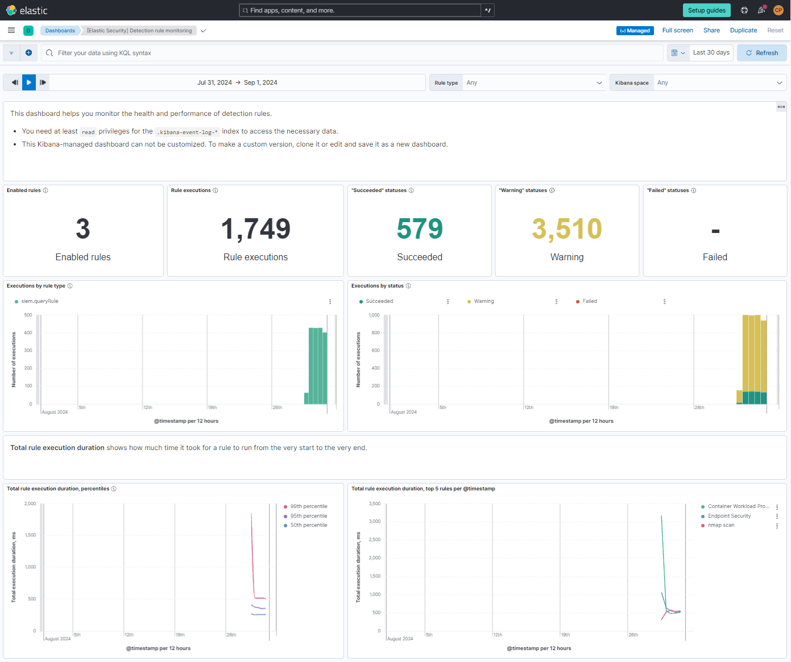

Connor Panso
Questions or suggestions, note to cpanso at outlook dot com
In this project, I set up a home lab to explore Security Information and Event Management (SIEM) using the Elastic Stack and a Kali Linux virtual machine (VM). This lab allowed me to test and understand how SIEM works by simulating real-world security events and monitoring them in real time. Here's what I did:
I started by creating a free Elastic account and deployed an Elastic SIEM instance on the cloud. This instance would serve as the central point for collecting and analyzing security events.
I installed Kali Linux on a virtual machine using VirtualBox. Kali Linux is a popular OS for penetration testing and comes with pre-installed tools that are perfect for generating security events.
I configured the Elastic Agent on the Kali VM to collect logs and forward them to the Elastic SIEM. This setup enabled seamless data flow from the Kali machine to the SIEM for analysis.
Using Nmap, a network scanning tool, I generated various security events on the Kali VM. I conducted different types of scans to simulate potential security threats, such as open ports and running services.

I used the Elastic SIEM interface to query and analyze the logs generated by the Nmap scans. This allowed me to see how security events appeared in the SIEM and understand how incidents could be detected and investigated.
I created a dashboard within Elastic SIEM to visualize the security events over time. Additionally, I set up alerts to automatically notify me when specific types of security incidents, like Nmap scans, were detected.
Through this project, I gained hands-on experience with using Elastic SIEM for security monitoring and incident response. By testing my own system (Kali Linux) and seeing the real-time impact of my actions on the SIEM, I developed a better understanding of how to detect, analyze, and respond to security threats in a real-world scenario.